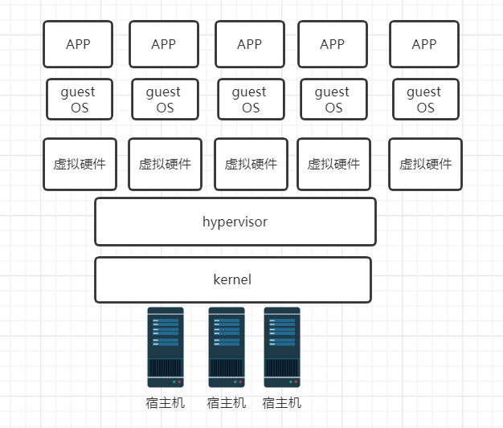
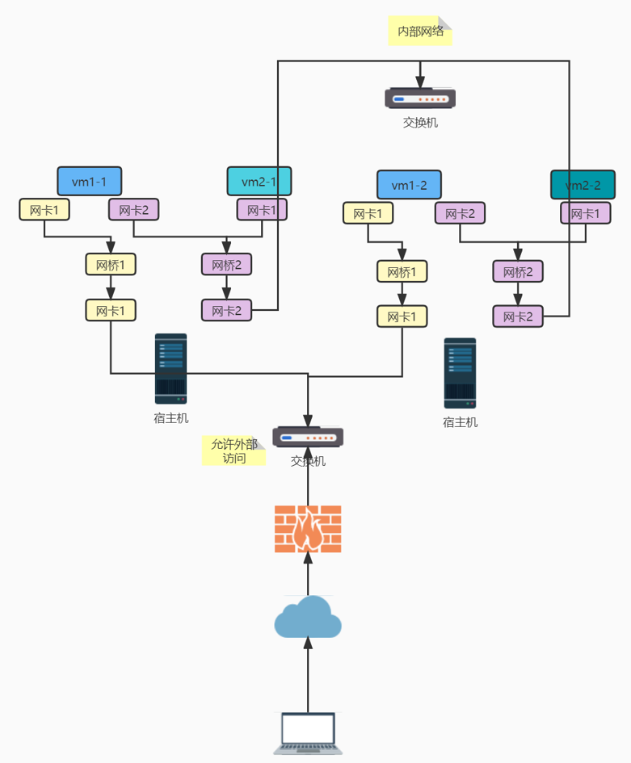
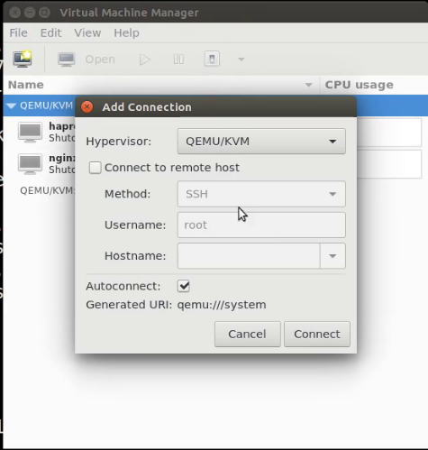
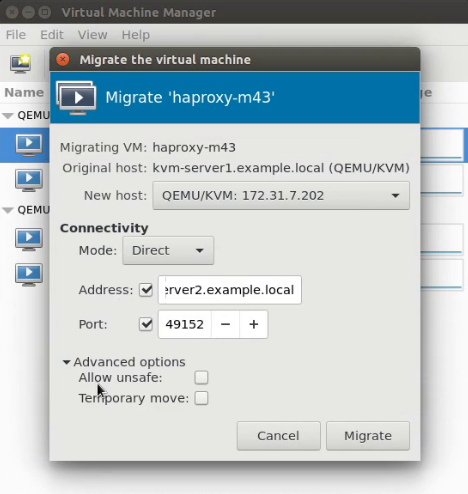

虚拟化基础和KVM管理虚拟机
本文主要总结了虚拟化的基础概念，使用KVM部署虚拟机的方法。
虚拟化概念
虚拟化是一种资源管理技术，将物理机的CPU、内存、磁盘、网络适配器等实体资源予以重新分割、组合，从而最大化合理利用物理资源。物理机可叫做宿主机，虚拟机叫做客户机，虚拟操作系统也称为guest os。在宿主机上可看到虚拟机以进程的形式运行。
通过虚拟化技术可在一台物理机上运行多个操作系统和应用，互相严密隔离，在虚拟操作系统与物理机内核间工作着hypervisor，管理虚拟机资源的分配和操作系统加载。根据hypervisor类型可分为裸机型和主机托管型，即可直接运行在物理机上（如VMware EXSI KVM）和必须运行在有虚拟化功能的操作系统上（如VMware workstation）

虚拟化还有以下分类：服务器虚拟化、网络虚拟化（k8s和OpenStack中需要使用）、桌面虚拟化、应用虚拟化、存储虚拟化（NAS、ceph、samba）。
而容器技术被称为下一代虚拟化技术，容器可粗略理解为更轻量级、更高效、更方便批量部署的虚拟机。
云计算概念
云计算（cload computing）是google前首席执行官在搜索引擎大会上提出的构想，即通过网络为客户提供网络计算服务，包括硬件、平台、软件资源均由网络提供，该网络则被称为“云”。
云计算分层：iaas（Infrastructure as a Service），基础设施服务，如阿里云ecs云服务器，购买云服务器无需管理硬件和hypervisor。paas（Platform as a Service），通过网络提供某种服务，如购买阿里云的redis服务，购买该服务无需管理服务器的运行环境、中间件、操作系统，仅需管理该应用。saas（Software-as-a-Service），软件服务，如云盘、企业邮箱等，可直接使用，无需管理该服务，仅需管理用户数据。
KVM创建虚拟机
如果宿主机是虚拟机，需要确认勾选了cpu的虚拟化功能。目前一般物理机的CPU均已支持虚拟化。
KVM工具包
centOS：qemu-kvm qemu-kvm-tools libvirt libvirt-client libvirt-manager virt-install
ubuntu：qemu-kvm virt-manager libvirt-daemon-system
管理工具
libvirt 虚拟化管理工具和应用程序接口
virsh KVM命令行工具
virt-manager 图形化管理工具
OpenStack 开源虚拟化编排工具，用于大规模虚拟机管理
准备网络
使虚拟机能访问外网。
宿主机配置NAT网络，则虚拟机连接外网，但不可从外部访问。宿主机配置网桥网络，则虚拟机既可连接外网，也可从外部访问。
创建磁盘
默认保存路径 /var/lib/libvirt/images
示例：创建一个10G raw格式磁盘
1 | |
命令用法，具体参数用法省略
1 | |
安装方法虚拟设备配置
示例，使用hypervisor为kvm，虚拟机名为centos7 内存1024m 虚拟cpu2颗 安装光盘路径/usr/local/src/CentOS-7-x86_64-Minimal- 1908.iso
磁盘路径为上文创建的磁盘， 不自动连接客户端控制台
1 | |
主要选项如下，其他省略
1 | |
开始安装
可使用vnc viewer远程连接宿主机的相应端口，从而连接到虚拟机，初始化安装。
或者使用virt-manager图形化界面初始化安装。
virt-manager上可进行虚拟机的配置修改、迁移、克隆，操作类似VMware workstation，可使用远程控制终端来显示图形界面。
将VMware虚拟机迁移到kvm中
将虚拟机文件拷贝到kvm宿主机中，使用qemu-img转换VMware磁盘文件格式vmdk为kvm的格式即可。
虚拟化环境案例
在内部网络中有部分服务需要允许外部访问，可进行如下配置。实际配置中还可配置数据网络，即添加第三个网桥。保证网卡高可用可先多配置网卡进行网卡绑定再配置网桥。

KVM热迁移
需要将宿主机1的虚拟机迁移至宿主机2
宿主机1安装openssh-askpass ，然后可在virt-manager界面连接宿主机2，管理宿主机2的虚拟机。填写迁移目标，选择迁移虚拟机即可。另一主机ping该虚拟机可发现，甚至没有丢包。
推荐使用共享存储，不需拷贝磁盘文件，而仅需拷贝操作系统和虚拟机配置，可大幅提升迁移速度

需要做有对方域名解析，勾选允许不安全

商业虚拟机管理工具VMware vsphere
以下均需要付费使用，申请试用后可下载以下软件包。
VMware vcenter server提供功能更强大的服务器虚拟化管理平台，可在web界面上进行管理。必须运行在windows server上
vmware esxi内部有微型操作系统，可直接运行在物理机，物理机与虚拟机间少了一层物理机操作系统，理论上有更好的性能。物理机需要开启辅助虚拟化。安装esxi后，提供web界面，可登录进行管理虚拟机。
查看官网了解VMware vsphere
本博客所有文章除特别声明外，均采用 CC BY-SA 4.0 协议 ，转载请注明出处！